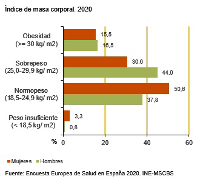
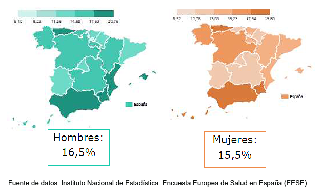
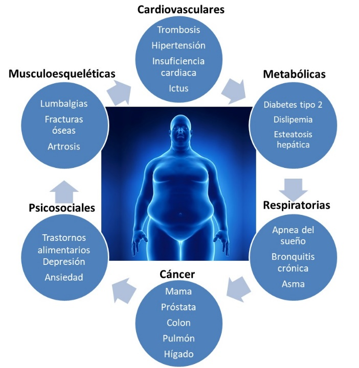
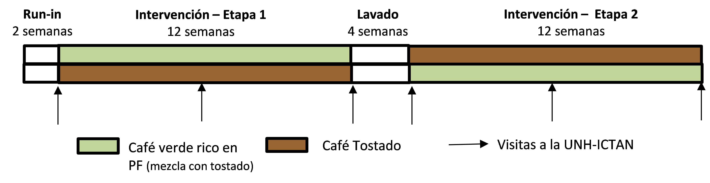

A pesar de la continua lucha contra la acumulación de grasa y el exceso de peso mediante la
aplicación GENERAL de dietas, ejercicio físico y fármacos diversos, el sobrepeso/obesidad,
así como
las enfermedades asociadas, continúan siendo un problema de salud de enormes dimensiones,
tanto
a nivel mundial, como en España.

Según la Organización Mundial de la Salud (OMS), las cifras de sobrepeso en adultos sobrepasaban los
1900 millones en 2016,
con más de 650 millones de adultos obesos, lo que equivalía a un 39% de la población mundial con
sobrepeso y un 13% con obesidad
datos de obesidad y sobrepeso en el mundo
En España, los datos eran aún peores, pues el porcentaje de obesidad en la población española se
elevaba al 16% en las personas adultas y más de un 10%
en niños entre 2 y 17 años en 2020. De la misma manera, el sobrepeso afectaba a un 38% de los
adultos (30,6% de las mujeres y a un 44,9% de los hombres)
(Encuesta Europea de Salud en España 2020, INE-MSCBS)


Manejo del exceso de peso
La obesidad constituye un problema muy complejo en el que influyen múltiples factores
como son los ambientes obesogénicos que nos rodean (dietas hipercalóricas, alimentos altamente
procesados, sedentarismo, etc.),
así como factores genéticos y metabólicos, entre otros.

La obesidad subyace a numerosas patologías asociadas al exceso de peso corporal, como diversas
enfermedades cardiometabólicas,
incluidas la diabetes mellitus tipo 2, enfermedades cardiovasculares, dislipemia, hipertensión,
síndrome metabólico,
enfermedad de hígado graso no alcohólica, etc. También causa problemas osteoarticulares,
respiratorios, neurológicos y se asocia
a una mayor incidencia de algunos tipos de cáncer. La obesidad no sólo afecta al aspecto exterior,
sino que el deterioro en la salud
y calidad de vida de las personas con exceso de peso también suele acompañarse de problemas
psicosociales, laborales, baja autoestima, etc.
Todo ello hace que las personas con sobrepeso u obesidad busquen perder peso, si bien el éxito a
largo plazo suele ser muy bajo.

¿Por qué hacemos este estudio?
Nuestro grupo de investigación lleva años estudiando un tipo de compuestos bioactivos de los
alimentos,
los compuestos fenólicos o polifenoles, así como del efecto del consumo de alimentos ricos en
polifenoles en la salud.
En estudios anteriores realizados con café verde, rico en ácidos clorogénicos, pudimos comprobar que
el café verde tenía
numerosos efectos beneficiosos, ejerciendo un significativo efecto hipotensor,
hipocolesterolemiante, hipoglicemiante,
disminuyendo la resistencia a la insulina, el peso corporal y el porcentaje de grasa corporal en
voluntarios sanos,
con riesgo cardiovascular y con sobrepeso/obesidad. En la Tabla 1 de la información adicional
descargable aquí se detallan estos resultados.
Sin embargo, hubo una gran variabilidad en la respuesta de los voluntarios, tal como se muestra en
el ejemplo señalado en esta figura
en relación con los cambios en los niveles de LDL-colesterol entre sujetos normo e
hipercolesterolémicos.

De ahí que el principal reto de nuestra investigación sea no (sólo) conocer si el café verde es
beneficioso para la salud,
sino intentar determinar qué factores influyen en la variabilidad interindividual en la respuesta al
consumo de este alimento rico en compuestos bioactivos.
El proyecto GREENCOF propone reclutar el mayor número posible de voluntarios con sobrepeso/obesidad
que estén interesados en participar
y seguir la estrategia de ingerir diariamente un producto de café verde, ligeramente deshidratado,
que contiene una mayor cantidad de polifenoles.
El estudio a realizar será un ensayo clínico de intervención nutricional controlado, aleatorizado,
cruzado y doble ciego,
en el que los participantes tomarán tres tazas diarias (desayuno, media mañana y comida) de café
verde o tres tazas de café tostado normal (control),
durante 12 semanas, tomando el otro tipo de café después de un lavado de 4 semanas (ver esquema).

A lo largo del estudio, los voluntarios tendrán que proporcionarnos información a través de una
serie de cuestionarios,
así como venir al centro de investigación del CSIC, el Instituto de Ciencia y Tecnología de
Alimentos y Nutrición (ICTAN),
en determinadas ocasiones (señaladas con una flecha en el esquema del estudio). En estas visitas,
realizaremos una extracción sanguínea a los voluntarios,
quienes también nos proporcionarán otras muestras biológicas (orina y heces) para la realización de
los diversos análisis de variables genéticas y cardiometabólicas,
así como de la microbiota intestinal. Además, se realizará un detallado estudio antropométrico y de
composición corporal
y se monitorizará la actividad física que realizan mediante acelerómetros.
Tareas a realizar por los farmaceuticos
Proponemos que los profesionales de farmacia interesados en participar en GREENCOF, en la medida de
lo posible,
realicen las siguientes tareas para establecer el protocolo de reclutamiento de los voluntarios y su
interacción con ellos:
Participar en la jornada formativa que tendrá lugar en el ICTAN para presentarles y explicarles
el proyecto en detalle y aclarar dudas.
Distribuir en sus farmacias una serie de carteles de anuncio y/o trípticos informativos para
captar entre sus pacientes a posibles voluntarios.
Realizar sugerencias en relación con su grado de implicación en el proyecto. Nos interesa
conocer cuál es su interés en el tema
y las posibles aportaciones de la farmacia comunitaria. ¿Tienen interés en conocer/aplicar más de
cerca los factores que influyen en el estudio como,
por ejemplo, la posible aplicación de ensayos genéticos en el futuro?
Establecer un protocolo de contacto con los voluntarios interesados mediante una pequeña charla
introductoria al proyecto y al interés del mismo,
en el que se le comenten al voluntario los aspectos principales del proyecto y/o, si lo considera
oportuno, remitirle directamente al equipo investigador.
Los farmacéuticos que lo deseen podrán participar en el seguimiento de los voluntarios, en
relación con los posibles cambios en el peso
y el seguimiento de la adherencia de los participantes en estadios intermedios.
Los farmacéuticos podrán mantener una interacción continuada con el equipo investigador durante
el proyecto.
Podrán participar en una reunión final en la que se expondrán los resultados del proyecto.